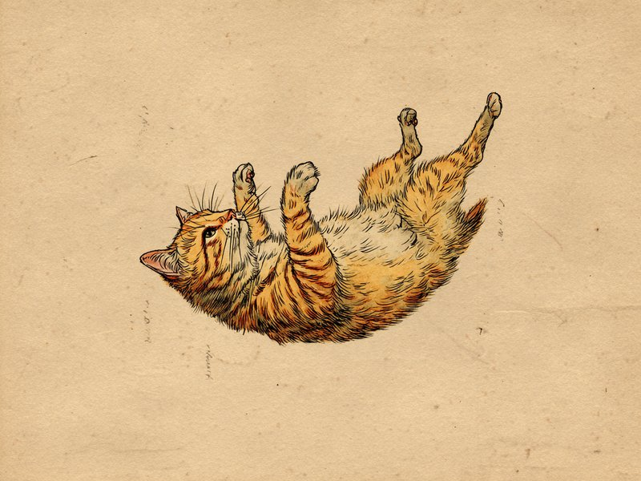

驚異の立ち直り反射と、「中くらいの高さが一番危ない」というふしぎな事実。 Cats always land on their feet — but that doesn't mean falls are safe. In fact, veterinary data shows mid-range falls can be more dangerous than very high ones.
猫の驚異的な「立ち直り反射」
猫が高いところから落ちても身をひるがえして着地できるのは、「立ち直り反射」と呼ばれる能力のおかげです。内耳にある優れた平衡感覚センサーで体の傾きを瞬時に感知し、非常に柔軟な背骨と、鎖骨が退化してほぼ浮いた状態になっている骨格構造を活かして、前半身と後半身を別々にひねることで空中で体勢を立て直します。この反射はおよそ90cm程度の高さがあれば発動するとされ、猫が「高いところが平気」というイメージを持たれる理由のひとつです。
実は「中くらいの高さ」が一番危ない
ここからが本当に「ざんねん」なポイントです。1987年にニューヨークの動物病院が発表した、高層階からの落下事故で運び込まれた猫132匹を対象にした調査では、驚くべき結果が示されました。落下した階数が上がるにつれて骨折や内臓損傷の重症度は上がっていくものの、7階を超えるあたりから逆に重症度が下がる傾向が見られたのです。これは「高所落下症候群」と呼ばれる現象で、猫がある程度の高さまで落ちると終端速度(それ以上加速しない速度)に達し、体の緊張がとけてムササビのように四肢を広げた姿勢を取ることで、衝撃を体全体に分散させやすくなるためではないかと考えられています。つまり「中途半端な高さからの落下」が、実は一番危険という笑えない事実です。
出典: Whitney, W.O. and Mehlhaff, C.J. (1987). "High-rise syndrome in cats." Journal of the American Veterinary Medical Association, 191(11), 1399-1403.
飼い主が気をつけたいこと
この研究結果は、猫が高い場所を怖がらない性格と、網戸やベランダの隙間から簡単に転落しうる住環境が組み合わさると、決して他人事ではないリスクになることを示しています。特にマンションなど高層階にお住まいの場合、窓や網戸の開けっぱなしは避け、ベランダに出す際は必ず目を離さないようにするなど、日頃からの対策が大切です。